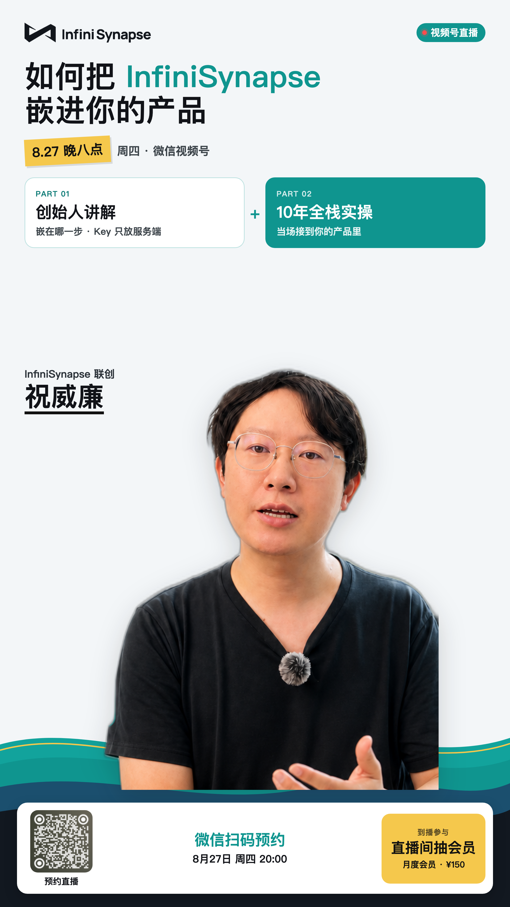
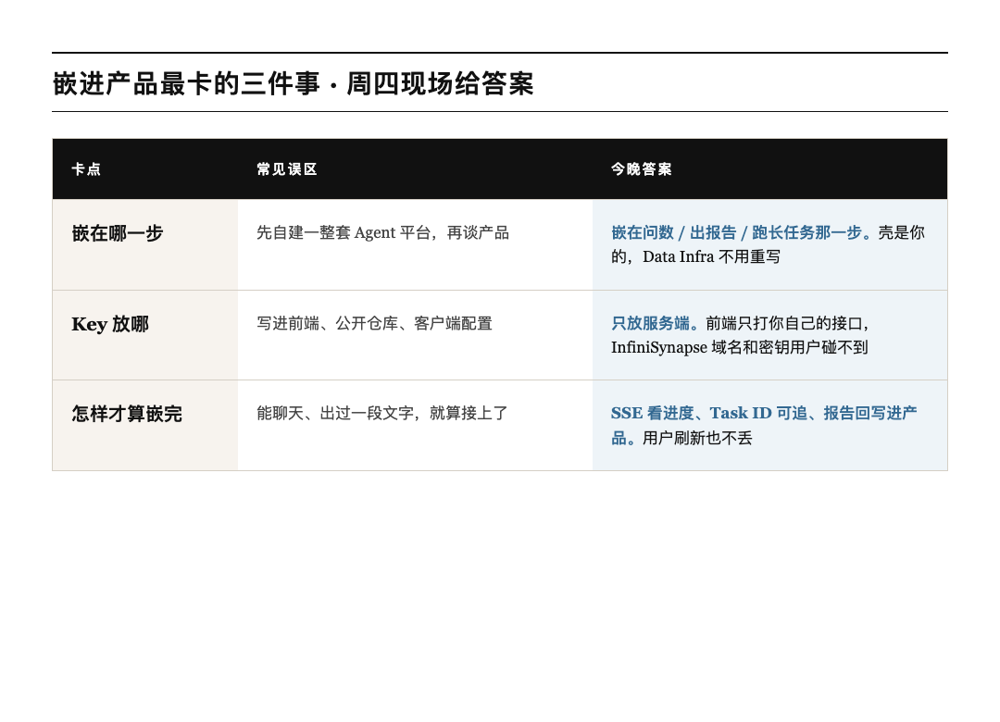
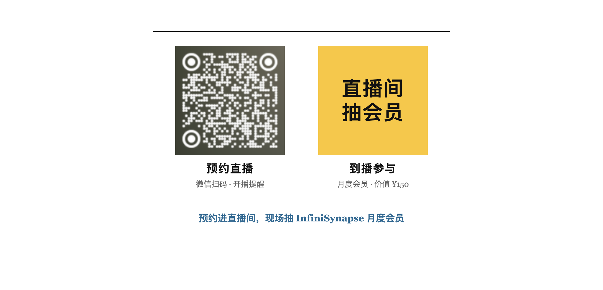

上一场我们聊企业落地：库再脏，也能先问起来。
这场换镜头。你已经有产品壳了——表单、进度条、结果页都 vibe 出来了。卡的是后面那条看不见的链路：谁来问数、谁来出报告、长任务跑到一半用户刷新了怎么办。
明天周四晚上，InfiniSynapse 联创祝威廉 来视频号，对着这件事现场接一遍。不念架构图，就打开一条真实接入：从你的后端到报告落回你的页面。
先记一句
页面可以 vibe 出来；问数、出报告、跑长任务，嵌进你的产品就行。 Key 只放服务端。

祝威廉， InfiniSynapse 联创。上一场讲怎么在脏数据上先跑起来；这场讲怎么把同一套能力嵌进你自己的产品。
Vibe Coding 大赛刚公布 62 席获奖。那些作品不是聊天框套壳，是把 Server API 接进自己的场景：选校、比价、资产体检、报告快写——壳各不相同，底下是同一条链路。
周四就盯三件事：
翻译成人话：壳是你的， Data Infra 不用重写，验收看的是报告有没有回到你的页面。

到时候你就盯这三句就够了：
现场会把最小闭环跑给你看，顺序别搞反：
国内走 .cn，海外走 .com。完整接口在 Server API Reference[1]。
周四中间会穿插问答。前端能不能直连、 Key 泄露怎么办、长任务会不会丢、积分怎么算，都可以问。问题优先从群里抽，所以先进群更划算。
时间： 8 月 27 日周四 20:00–21:00
地方：微信视频号
人：祝威廉｜ InfiniSynapse 联创
直播间会抽 InfiniSynapse 月度会员，价值 150 元。先预约，到点进直播间参与。
两步就结束
先扫码预约直播，到点微信会提醒你。会员在直播间抽。

进了群、又预约了，直播时优先被问到。你手头的坑也可以直接丢进来：页面有了接不上、 Key 不知道放哪、报告出不来，都欢迎。
壳可以一晚上 vibe 出来。嵌进去的那一夜，周四一起看。
8 月 27 日周四 20:00 ，视频号见。
参考链接
[1] Server API Reference: https://infinisynapse.cn/zh/docs/InfiniSynapse%20Server%20API%20Reference